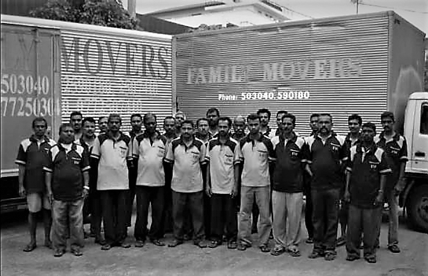
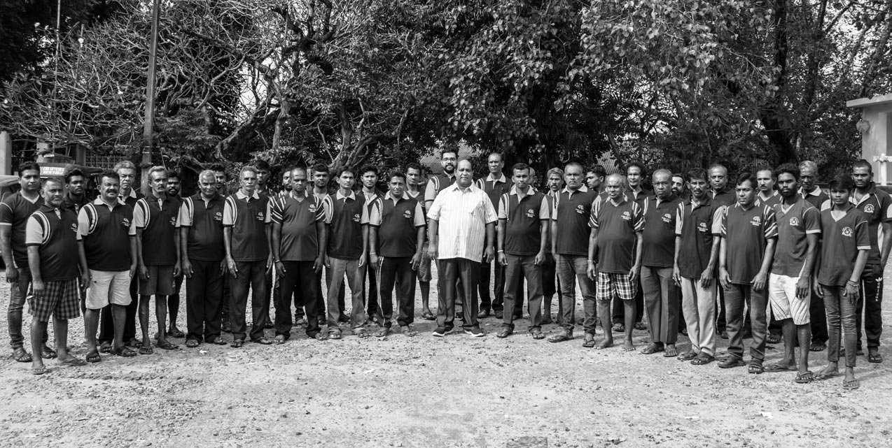
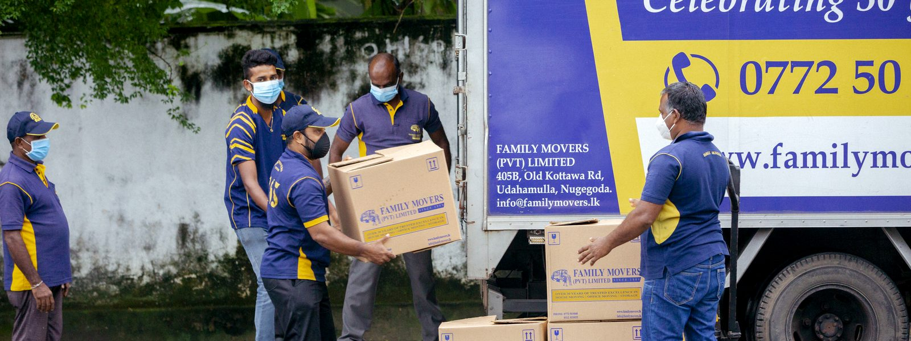
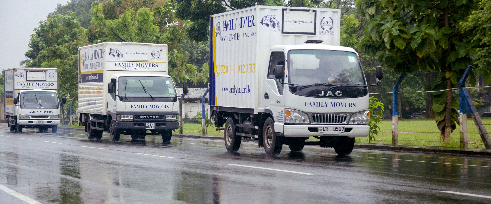
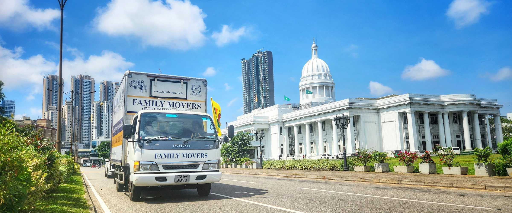
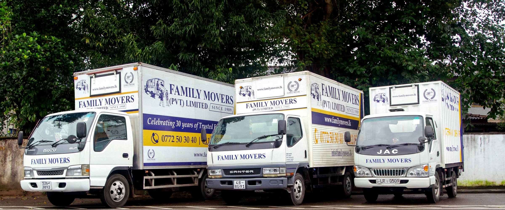
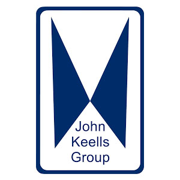

Our vision
Our Vision is to raise the standards of the relocation industry in Sri Lanka in terms of safety, efficiency and quality of service.
Experts in packing, moving and storage
Safety of your stuff is our business. Islandwide, day or night, 365 days a year — since 1989.
We are one of the largest, best equipped and most experienced relocation service providers in Sri Lanka, specialized in servicing the needs of today's demanding businesses and individuals. We respond to the moving needs of our clients islandwide, day or night on 365 days a year, with a dedication that delivers exemplary service. Our high standards of personalized care are distinguished by efficiency, expertise and experience - since 1989...

About us
Since our commencement in 1989, Family Movers has established itself as pioneers in the moving industry in Sri Lanka. Our diverse clientele ranges from Government ministries, local and international Banks, mercantile establishments, eminent personalities and numerous individuals.
Our history
Family Movers is the brainchild of its founder and chairman Mr. Nimal Chandrasiri. After a short stint in the United States, he returned to the country and joined a transport organization where he learned the intricacies of this industry, and took the bold decision of forming an establishment of his own. Together with an assistant, fifteen laborers and two Lorries, he inaugurated Family Movers in the year 1989.
Over time, Family Movers came to be a household name when it came to moving. With the rising popularity and affluence, Family Movers was registered as a limited liability company in 2002 as Family Movers (Pvt) Ltd.
Our Vision is to raise the standards of the relocation industry in Sri Lanka in terms of safety, efficiency and quality of service.
Our Mission is to provide a complete, personalized and professional transport solution to our customers, using new technology available in the industry and our unique expertise gathered over three decades - all to the entire satisfaction of our valued clients.
With a workforce of over 40 permanent employees, our team at Family Movers (Pvt) Ltd is one of the largest groups of professional movers and packers in the country - many of whom have more than a decade of industry experience. Family Movers offers its moving services 24/7 with a dedicated support staff of eight team members, fully prepared to cater to any moving task entrusted to us.



Our well trained and experienced staff can assist you every step of the way. Working as a team with you to execute a job that would guarantee satisfaction. We ensure that nothing is left to chance and provide a comprehensive solution for your relocation: From packing to dismantling & reassembling furniture and fixtures, to moving delicate computer hardware and server racks, to handling heavy items such as iron safes, ATM machines and pianos, we will transport all your items securely with care...
At Family Movers (Pvt) Ltd, we are experts in packing, moving and storage and have built our business on a reputation for excellence. We understand that prior planning and careful management is as important as a professional execution - Our high standards of service quality is consistently confirmed by our valued clients who choose Family Movers (Pvt) Ltd as their preferred transport provider time and time again.
Moving house can be a stressful affair, so it is important to do all you can to make sure it does not become an overwhelming experience. At Family Movers (Pvt) Ltd, we cover all aspects of your move from packing to dismantling / reassembling furniture, transporting pianos and safes etc. We strive to do our best to make the transition to your new home smooth and hassle free for you and your family.
Moving an office is a mission critical task. During the moving process some segments of your establishment may be out of business. Documents, systems, computers, network and phones might not be accessible. Family Movers (Pvt) Ltd is and has been the trusted choice in moving for many reputed establishments for over three decades. We ensure a safe and efficient move with the minimum disruption to your operations.
Discover Convenient Storage Solutions! Family Movers offer secure short-term and long-term storage options for both household and office furniture. Safeguard your belongings in our secure locations. Whether you're in transition or need extra space, trust us to keep your valuables safe and accessible. Explore our storage services today.
While we take pride in excelling in moving your home goods, Family Movers also specializes in offering below moving related services:
We understand the critical importance of your IT infrastructure. Whether you are moving your office, data center, or upgrading your IT setup, we have the expertise and dedication to ensure a seamless transition. From carefully packing your networking hardware to shifting loaded server racks with secure transport, we ensure safe server migration to their new location with minimal disruption to your business operations.
Packing is a crucial part of any move or storage operation. Get it wrong and it can cost you valuable time and money. Our experienced, fully trained staff can take care of some or all of the packing you need.
If you opt for a full service for packing, Family Movers (Pvt) Ltd will send a team of professional packers to your home or office at your convenience and will pack all belongings as necessary for a local move or an international shipment.
Our storage facilities are safe and regularly inspected. So you can be sure that your belongings are always secure and stored in the best conditions. We offer professional packing, wrapping furniture, storage materials (including bubble wrap, corrugated boards, carton boxes, shrink wrap etc.) and suitable transport options for your storage requirements - both long and short term.
Should you wish to seek greener pastures abroad, do your homework about the new country and plan well in advance about the things you wish to take to your new home. We understand the paramount importance of your goods reaching your new destination in their original condition. Family Movers (Pvt) Ltd. can assist you with a trouble-free relocation.
Our team of professional packers will do the packing of your valuable items to withstand moving long distances in various modes of transport.
Crews on the job — homes, offices, and specialist moves across Sri Lanka.



Very impressed by Family Movers. I moved a houseful of furniture from Nugegoda to Nawala and Mount Lavinia and had no issues whatsoever. After I submitted my requirements, they had a few concerns so actually came to my house to check out the pieces of furniture they were unsure of, before sending me the quotation. The moving day was easy, as they were here on time sent a set of five movers, well versed in removing and assembling furniture. All staff were very courteous and got the job done in no time.
Andrew EbellHome Moving Customer
I have been in the business of supplying office equipment including Iron safes, tables & chairs for a period of over 20 years. During this period I have solely engaged the delivery services of Family Movers to my entire satisfaction as well as my clients. They have gone out of their way in meeting my delivery orders promptly with zero damages. I have no hesitation in recommending them as a very reliable company as movers and found their services efficient and charges reasonable.
M.T.A. IrshadFurniture Delivery Customer
Really excellent service by the whole team. When I had to change the moving date and they were very accommodating and understanding. The office staff re-checked and confirmed many times before the date. The team that came to do the move were top class and worked really hard to make sure everything went smoothly. They are an asset to the company. Very helpful. I would recommend Family Movers to anyone wanting this service. Totally stress free and top service!
Ayanthi Samarajeewa RajakarunaHome Moving Customer
Used their services twice, and on each instance they handled the items carefully from source to destination. The personnel involved are professional and careful. There were no issues with any of the team members sent and they all behaved professionally. The Driver of the truck had good knowledge in handling tight corners with good coordination and assistance from the team. If the need arises again to move items between houses, I would gladly call them again. Thank you Familly Movers!
Anthony GHome Moving Customer
Family Movers offers reliable and trustworthy services when moving IT infrastructure. We did a complete data center migration including loaded server racks from Rajagiriya to Maradana, which was completed on time and under the required conditions of work. Good team and easy to work with. Highly recommended
Udayantha IrugalbandaraIT Equipment Move
I have engaged Family Movers for various moving needs since 2007. They have always delivered exceptional service each time. The service quality has been consistent even when I engaged them in August 2022. The teams are knowledgeable in packing and moving fragile items and are able to handle the job entrusted to them with the utmost care. Highly recommended moving service provider.
Kumudini FernandoHome Moving Customer
Family Movers have moved stuff from my office and my home on multiple times. On each occasions their service was careful, personalized, on-time and efficient - everything I could ask for. They even packed my work documents as per my instructions. Yesterday they moved a very fragile architectural model from Colombo to Jaffna: the job was done with the greatest care and accomplished flawlessly. Thank you!! I recommend Family Movers without hesitation.
Madhura PrematillekeOffice Moving Customer
Dear Team, Many thanks for coordinating with me again and also for arranging a great team to shift our goods to my new home. They were very friendly and very efficient in work. The service you guys provide is very good and as a repeat client I have seen the consistency of the service with the teams and appreciate their experience. Keep up the good work. Whilst thanking you and the team for the support, my family and I wish you all the best for your future!
Himaz JiffreyHome Moving Customer
I have been using Family Movers for over 3 years for my business as well as my home moving requirements and they have always provided a good service. We had to move to a new location during Covid-19 and due to curfew restrictions we had limited days to plan and move. However they were very efficient agreed to do the job with only 4 days notice. The service was done efficiently and professionally as always. And really appreciate Thilini's help in organizing the move during lockdown. A big thank you to Akila and his team at Family Movers!
Kathyusha KariyawasamRetail Store Move
We had a super experience with Family Movers who assisted us tremendously during our house shifting. Their team lifted a huge burden off of our shoulders. They were extremely diligent with all our things and they handled them with a lot of care with no damage. I will highly recommend Famliy Movers for anyone who is planning to shift their homes.
Mathuvanthi PathmanathanHome Moving Customer
We had a requirement to shift a complicated architectural model of a high-rise building that was approximately 7.5' tall and enclosed in a glass box. The model needed to be taken to an upper floor through a construction site. I spoke to almost all known movers for this difficult task and got turned away. Family Movers accepted the work after a site visit and did an amazing job. The model was shifted without any damage or dislocating any of the intricate parts. Their teamwork and experience made it look easy!
Hansinee MaddewithanaArchitectural Model Shifting
Call centre operating hours: 8 AM to 5 PM - Monday to Saturday (Except Mercantile Holidays). Moving services available 24/7.
Opens your email app to info@familymovers.lk. The old Google Form quote request is not included on this site.